Biodiversidad
Reducción de la pobreza

Consumo sostenible

Cambio climático

Reducción de desastres
El Programa Educación para el Desarrollo Sostenible del Parque La Libertad (PEDS-PLL), consiste en la coordinación de esfuerzos entre los centros educativos del área de influencia del Parque La Libertad y las comunidades con el Parque para el desarrollo de sesiones de aprendizaje al aire libre que promueven el fortalecimiento de actitudes pro-ambientales, y el desarrollo de competencias para la sana convivencia con el ambiente.
Para esto se utilizan como herramienta los principios propuestos por Carta de la Tierra, además se trabaja en 3 áreas principales como escolar, investigación y visitas educativas.
4505 estudiantes

5 cantones más densamente poblados del país
.svg)
4505 estudiantes
En cada actividad se trata de practicar y desarrollar estos principios, utilizando metodologías propias del aprendizaje por indagación. Atiende a estudiantes de tercer y cuarto grado de la educación general básica pertenecientes a centros educativos dentro del área de influencia del Parque.
Durante el 2018 se implementó por quinto año consecutivo un programa de educación ambiental en el Parque La Libertad, siendo éste el segundo año en el que se ofrece un programa diseñado específicamente desde la educación para el Desarrollo Sostenible.
Educar para el desarrollo sostenible es incorporar en los sistemas educativos y en el contexto familiar los temas fundamentales del desarrollo sostenible como:
Biodiversidad
Reducción de la pobreza
Consumo sostenible
Cambio climático
Reducción de desastres
La responsabilidad individual y colectiva ante el deterioro de las condiciones ambientales es un tema de atención prioritaria en respuesta al creciente impacto sobre los recursos naturales.
La educación para el desarrollo sostenible ha sido señalada en los Objetivos de Desarrollo Sostenible como una estrategia para que los estudiantes adquieran la capacidad para hacerse responsables del:
Ambiente en el que viven

Del cuidado de sí mismos

El Programa se enfoca en atender a grupos escolares de tercer y cuarto grado de primaria, con especial prioridad a las escuelas públicas que se encuentran dentro del área de influencia del Parque La Libertad.
No obstante, cualquier centro educativo que quiera formar parte puede unirse y solo debe comprometerse a cumplir con los requisitos, los cuales son:
Mostrar interés para formar parte del programa. Se puede realizar por escrito vía correo electrónico a:
- Jennifer Sánchez A., Coordinadora PEDS
- jsanchez@parquelalibertad.org
Consultas y más información al teléfono 2276-9400 extesión 2025
El o los docentes guías deberán participar en una sesión de capacitación y planeación en la fecha que se defina en el mes de febrero o marzo.
Asistir a las sesiones que se programarán de forma conjunta en la capacitación con los docentes.
Cada centro educativo debe gestionar el transporte y alimentación de los escolares.
El Parque La Libertad aportará las instalaciones, facilitadores y todos los materiales requeridos para la óptima atención de los escolares.
Los centro educativos privados también pueden formar parte de este programa.

Los ecosistemas urbanos son espacios valiosos para desarrollar investigaciones sobre ecología y las interacciones particulares que se generan a partir de la relación entre el crecimiento urbano y la biodiversidad en estas áreas.
El Parque La Libertad cuenta con proyectos activos de investigación y ofrece facilidades para investigadoras e investigadores interesadas en generar modelos experimentales para el sitio que generen información que a la vez sea útil para la toma de decisiones para visibilizar las relaciones ecosistémicas de los espacios urbanos.
Principales áreas de investigación:

Rehabilitación ambiental
Avifauna

Artrópodos terrestres
Macroinvertebrados acuáticos
Regeneración y recuperación de cobertura vegetal
Con el fin de fortalecer las actitudes y conductas pro-ambientales en las comunidades aledañas al Parque y apoyar a otros públicos interesados, el Parque atiende visitas de interesados en temáticas ambientales y de desarrollo sostenible como:
.svg)
Separación de residuos y ciclo del reciclaje
.svg)
Cambio climático y acciones positivas hacia el ambiente
.svg)
Agricultura urbana y huerta escolar
Desarrollamos además actividades lúdico-educativas con el fin de sensibilizar sobre amenazas a la biodiversidad en las áreas urbanas como caminatas guiadas, actividades de vacaciones, talleres cortos y otras más según los requerimientos del centro educativo. Se generan también actividades libres para la comunidad y las familias cercanas al Parque La Libertad, en los cuales se busca la sensibilización ambiental y generar actitudes positivas hacia la conservación.

Jennifer Sánchez A.
jsanchez@parquelalibertad.org
2276-9400 ext 2027